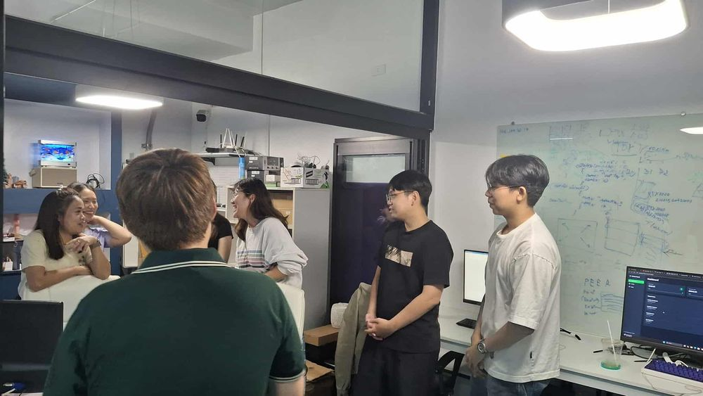

ฉลองวันเกิด ดร.เทพฤทธิ์
ทีมงานและนักศึกษาร่วมจัดงานฉลองวันเกิด ดร.เทพฤทธิ์
Inspect DossierThis dossier details public launch demonstrations, smart city exhibitions, and medical VR training workshops coordinated by the ICAT Research Group, displaying the practical deployment of scientific models in public settings.
Below is a directory of completed public showcases, technical symposiums, and hands-on laboratory workshops. Click on a dossier card to view details:

ทีมงานและนักศึกษาร่วมจัดงานฉลองวันเกิด ดร.เทพฤทธิ์
Inspect Dossier
การเปิดตัวแอปพลิเคชันท่องเที่ยวเชิงประวัติศาสตร์
Inspect Dossier
เวทีขับเคลื่อนนวัตกรรมการพัฒนาเมืองของ บพท.
Inspect Dossier
จัดอบรม Unreal Engine แก่นักศึกษา ป.โท วิจิตรศิลป์ มช.
Inspect Dossier
ททท. และ มช. จับมือเปิดตัวเว็บแอปฯ อนุรักษ์ทะเลไทย
Inspect Dossier
สนับสนุนสุขภาวะทางอากาศของนักวิจัยในแลป
Inspect Dossier